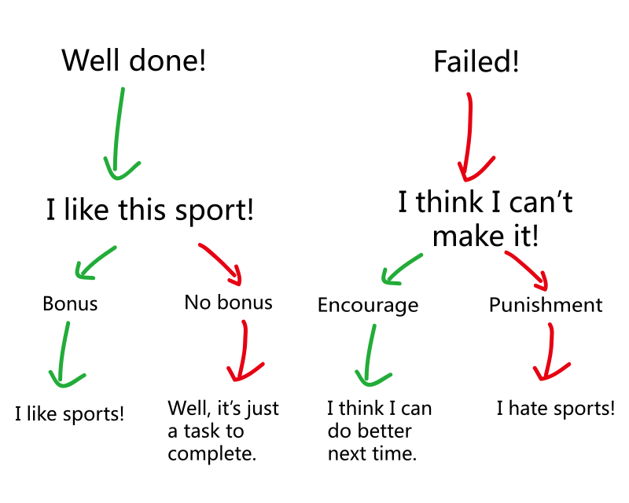

UN Department of Health Speech
presenting by group 1
by Josh Ouyang and check my github to explorer.
Physical Education in Chinese universities should reform
presented by Josh
The situation of P.E. in universities is terrible

But there's more trouble
But there's more trouble
Using a graph to show you status quo
We have these problems...
- University students' average physical fitness level is declining.
- Some university students are not willing to spend more time on physical training.
- Physical Education in Chinese universities is more like a mission to complete.
- Evaluation methods of Physical Education flawed.
We need a reform on education: Not on classes, but on tests and after-class part...
We should do...
- Use bonus and encouragement rather than punishment!
- Give more optional items when testing!
- Try some new-tech stuff for encouragement!
- Less stress for students!
Why bonus and encouragement?
For example, a student who's not very likely to play sports is having a physical test...
And here are the results...
Bonus and encouragement can inspiring!
While punishment(not able to graduate) can be harmful for some motivated students.
Why more optional items when testing?
Here is what we need to test...
- 1000/800 m running
- Reach test
- Long jump
- Chin-up
- ......
Good at one sport = good at every item?
For example...
Must
items
VS
Optional
items
Why trying some new-tech stuff?
What if we develop some Apps or websites?
Don't ignore the power of Internet!
Fire with fire!
Why Less stress for students?
THE END
Thank you!
by Josh Ouyang and check my github to explorer.